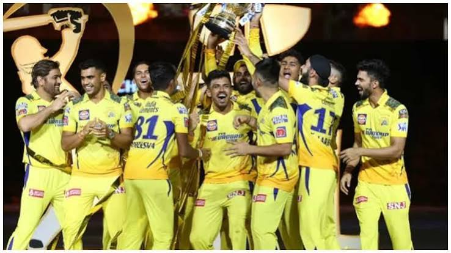

THE LEGEND OF INDIAN CRICKET
MAHENDRA
SINGH DHONI
Captain. Wicketkeeper. Finisher. Leader. A legendary cricketer who created history for India.
THE LEGEND OF INDIAN CRICKET
Captain. Wicketkeeper. Finisher. Leader. A legendary cricketer who created history for India.
The story of one of India's greatest cricket captains.
Mahendra Singh Dhoni, popularly known as MS Dhoni or Mahi, is one of the most successful captains and wicketkeeper-batters in the history of cricket.
Known for his calm personality, powerful batting, excellent wicketkeeping and extraordinary leadership, Dhoni became one of the most respected players in world cricket.
Born
International Debut
Major ICC Titles
Last International Match
From Ranchi to the world of cricket.
MS Dhoni was born on 7 July 1981 in Ranchi, Jharkhand, India.
During his school days, Dhoni played football and cricket. He initially played as a goalkeeper in football.
His wicketkeeping skills and powerful batting eventually helped him move forward in professional cricket.
Before becoming an international cricketer, Dhoni worked for Indian Railways as a ticket collector at Kharagpur.
Important moments in Dhoni's cricket journey.
Mahendra Singh Dhoni was born in Ranchi.
Dhoni made his ODI debut for India against Bangladesh.
Dhoni scored his first ODI century against Pakistan.
Dhoni led India to victory in the inaugural ICC Men's T20 World Cup.
Dhoni captained India to victory in the 2011 Cricket World Cup and hit the famous winning six in the final.
India won the ICC Champions Trophy under Dhoni's captaincy.
Dhoni played his final international match during the 2019 Cricket World Cup.
MS Dhoni was inducted into the ICC Cricket Hall of Fame.
The major international trophies won under Dhoni's leadership.
India won the inaugural ICC Men's T20 World Cup under MS Dhoni's captaincy.
India won the Asia Cup with Dhoni as captain.
Dhoni led India to its second ODI World Cup title.
India won the ICC Champions Trophy under Dhoni's captaincy.
Dhoni was part of India's successful Asia Cup campaigns.
Dhoni has led Chennai Super Kings to multiple IPL titles.
Important career statistics.
Test Matches
ODI Matches
T20I Matches
ODI Runs
International Dismissals
ICC Major Titles as Captain
The legendary journey with Chennai Super Kings.
MS Dhoni became the face and captain of Chennai Super Kings. He built CSK into one of the most successful teams in IPL history.
His calm decision-making, tactical thinking and ability to handle pressure made him one of the most respected captains in T20 cricket.
Dhoni's IPL career is closely associated with Chennai Super Kings and the famous "Whistle Podu" culture of Chennai.
Recognition received by MS Dhoni.
Dhoni received India's highest sporting honour at the time, the Rajiv Gandhi Khel Ratna.
Dhoni was honoured with the Padma Shri for his contribution to Indian cricket.
Dhoni received the Padma Bhushan, one of India's major civilian honours.
Dhoni was inducted into the ICC Cricket Hall of Fame in 2025.
Some memorable moments.
